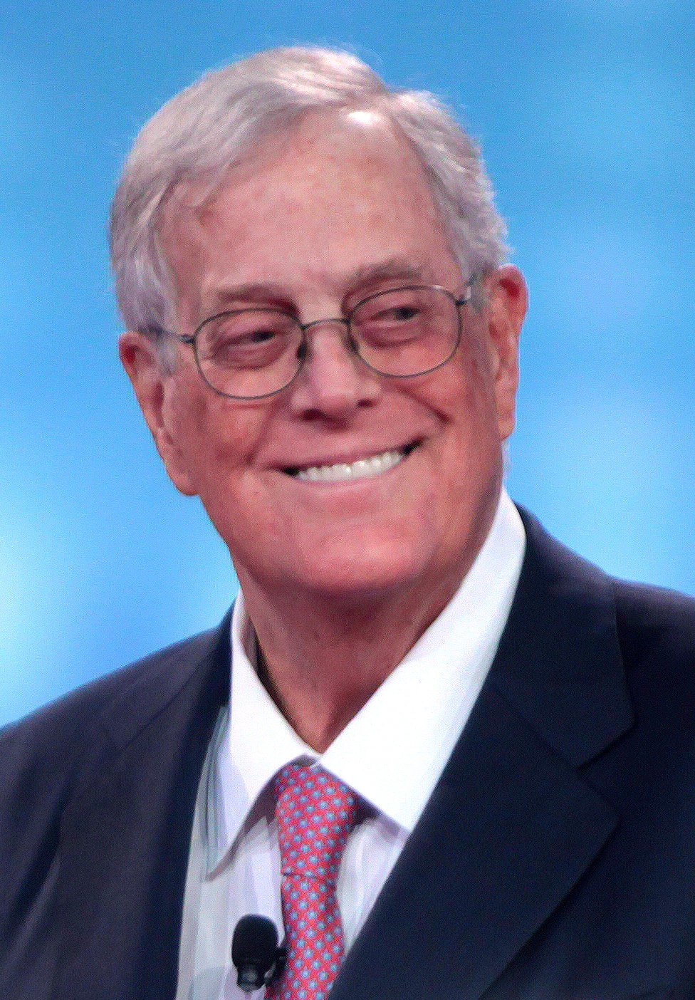

Charles and David Koch have been
active in American politics since at least 1980, when David Koch was the
Libertarian Party's vice-presidential nominee. Their political contributions
began to attract widespread attention from media outlets in 2008, when, through
their family foundations, the brothers contributed to 34 political and policy
organizations, three of which they founded, and several of which they directed.
They have since organized a network of libertarian and conservative donors,
candidates, think tanks, and other groups.
The Koch brothers have
indicated that they intend to raise almost $880 million in support of candidates
in the 2016 elections, and have given more than $100 million to conservative and
libertarian policy and advocacy groups in the United States, including the
Heritage Foundation and the Cato Institute, and more recently Americans for
Prosperity.
"Americans for Prosperity",
founded by David Koch, has been reported by Kenneth Vogel of Politico to be one
of the main nonprofit groups assisting the Tea Party movement; but in 2010, Koch
spokeswoman Melissa Cohlmia distanced the Kochs from the tea parties and
FreedomWorks saying that "no funding has been provided by Koch companies, the
Koch foundations, Charles Koch or David Koch specifically to support the tea
parties." According to the Koch Family Foundations and Philanthropy website,
"the foundations and the individual giving of Koch family members" have
financially supported organizations "fostering entrepreneurship, education,
human services, at-risk youth, arts and culture, and medical research."
Former Republican
congressman Joe Scarborough, co-host of MSNBC's Morning Joe, has pointed out
that, although their critics are usually unaware of the fact, the Koch brothers
have supported more than just what are generally considered conservative causes.
They opposed George W. Bush on many issues, are pro-choice, suport same sex
marriage, and had worked closely with the Obama White House for the Obama
administration's criminal justice reform initiatives that aligned with their
own.
According to investigative
reporter Jane Mayer and the environmental NGO Greenpeace, the Koch brothers have
played an active role in opposing climate change legislation. Climate change
skeptic Willie Soon received $230,000 from the Charles G. Koch Charitable
Foundation. The Kochs have also funded
efforts to stop the growth of solar power.
While the Koch family has
been making substantial donations to criminal justice reform organizations for
nearly a decade, most recently the Kochs headed a bipartisan resolution to make
more serious leaps to reform.
They, and their political allies,
have been described as a rival to the "establishment" wing within the Republican
Party, and have expressed frustration with establishment candidates running in
the 2016 Presidential election.
As an example of their influence, Jane Mayer
noted House Speaker John Boehner's appeal to David Koch in 2011 when Boehner
needed votes to prevent a government shutdown.
Organizations that the Koch brothers help fund, such as Americans
for Prosperity, The Heritage Foundation, the Cato Institute, and the Manhattan
Institute, have been active in questioning global warming Americans for
Prosperity and the Koch brothers influenced more than 400 members of Congress to
sign a pledge to vote against climate change legislation that does not include
offsetting tax cuts.
Included in these are aims at eliminating
overcriminalization and overincarceration, which generally harms low-income and
minority communities, as well as reducing recidivism rates, diminishing barriers
faced by the rehabilitated seeking employment, and law enforcement's asset
forfeiture to deprive the incarcerated of property.